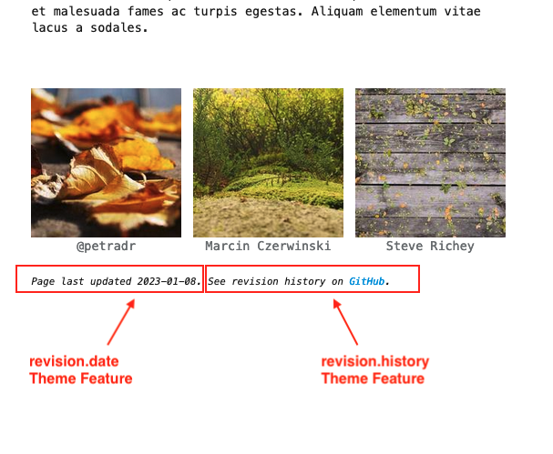

Git Revision Date Plugin#
The third-party git-revision-date plugin automatically adds the last revision date of a markdown page to its MkDocs Page Metadata1.
Built-in Support#
When the git-revision-date plugin is installed and enabled and the revision.date theme feature is enabled, Terminal for MkDocs will display the date of the most recent change to a page's source file on the rendered site page. This component is added at the bottom of each page unless page-specific hiding is enabled.

Quick Setup#
1. Install Plugin#
Add the package to your requirements.txt file:
# MkDocs Plugins
mkdocs-git-revision-date-plugin
Then run: pip install -r ./requirements.txt
2. Enable Plugin#
Enable the Git Revision Date Plugin by adding git-revision-date to the plugins list in mkdocs.yml:
plugins:
- search
- git-revision-date
3. Enable Theme Feature#
Enable the "Page last updated" theme component by adding revision.date to the theme's features list in mkdocs.yml:
theme:
name: terminal
features:
- revision.date
Advanced Configuration#
There are two revision-related theme features that can be individually enabled. The example above only discusses revision.date as it is easier to configure without error.
The second revision-related theme feature is revision.history. Enabling this theme feature will add a "See revision history..." note to the bottom of the page. The link included in this note relies on MkDocs' repo_url, repo_name, and edit_uri/edit_uri_template settings.

Currently the revision.history theme feature supports two repository hosts, GitHub and Bitbucket. See below for example configurations.
GitHub#
MkDocs project in root directory#
repo_url: https://github.com/ntno/ntno.net
edit_uri: edit/main/docs/
plugins:
- git-revision-date
theme:
name: terminal
features:
- revision.date
- revision.history
MkDocs project in child 'documentation' directory#
repo_url: https://github.com/ntno/mkdocs-terminal
edit_uri_template: https://github.com/ntno/mkdocs-terminal/edit/main/documentation/docs/{path}
plugins:
- git-revision-date
theme:
name: terminal
features:
- revision.date
- revision.history
Bitbucket#
MkDocs project in root directory#
repo_url: https://bitbucket.org/norganick/demo
edit_uri_template: src/main/docs/{path}?mode=edit
plugins:
- git-revision-date
theme:
name: terminal
features:
- revision.date
- revision.history
Adding Repository Hosts#
If your repository is not stored on GitHub or Bitbucket and you would like to use this feature please submit a feature request on GitHub.
You can further customize what revision information is included on the page by implementing your own revision template block. See Blocks for more information.
-
see MkDocs Page Metadata for more info ↩